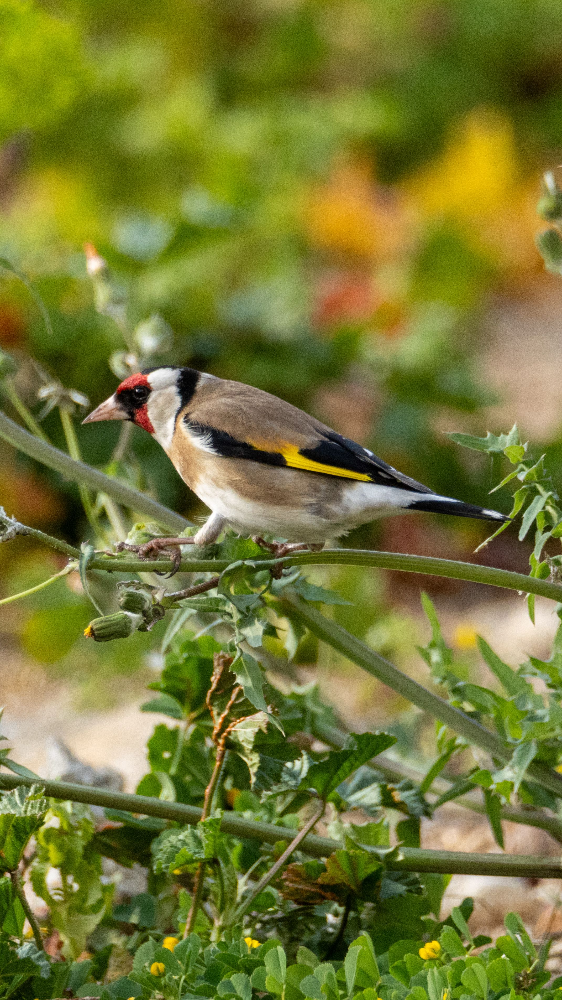

The European Goldfinch is a small and colorful finch distinguished by its bright red face, black-and-white head, brown body, and vivid yellow wing panels. It is commonly associated with lightly wooded landscapes, farmland, gardens, parks, scrub, and areas containing tall seed-producing plants. Its long, pointed bill is particularly well suited to extracting seeds from thistles, teasels, burdocks, and similar plants. Goldfinches often form flocks outside the breeding season and may gather in large numbers where abundant food is available. Compared with the European Greenfinch, the Goldfinch is smaller and much more boldly patterned, with a red face and yellow wing markings instead of the Greenfinch's predominantly green plumage. It also differs from the Common Chaffinch, which has stronger sexual differences and lacks the Goldfinch's red facial mask and yellow wing stripe. The species is widespread and adaptable and has benefited in some areas from garden feeding.